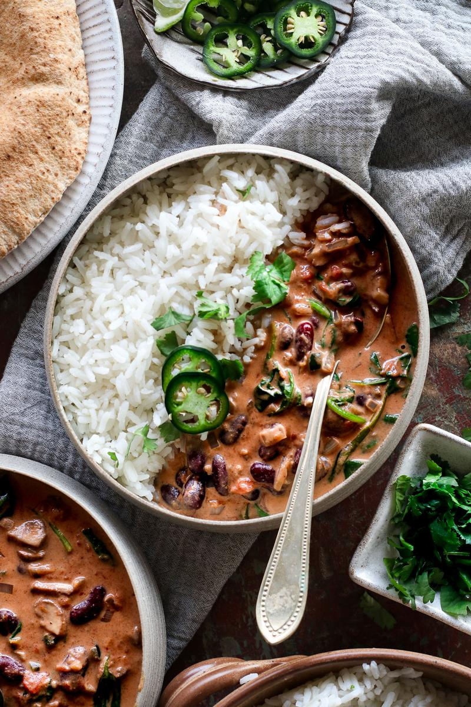
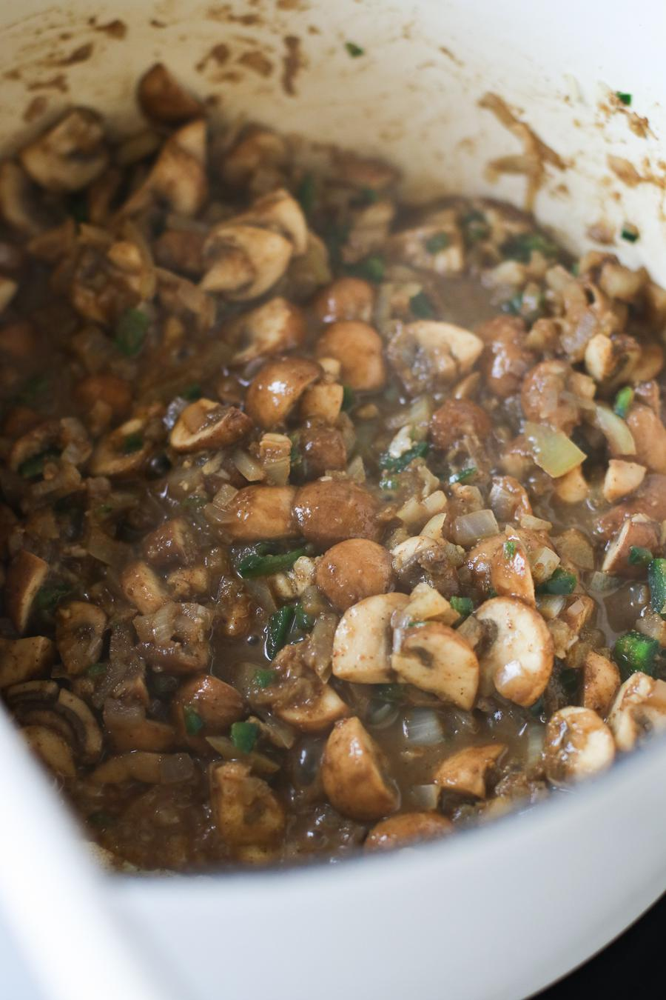
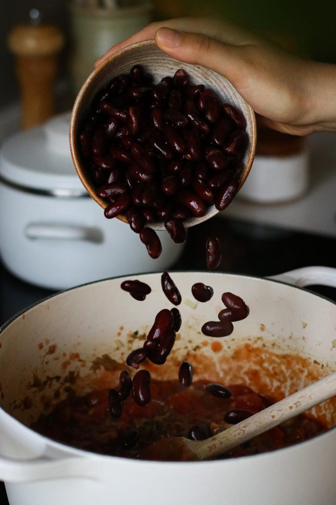

Mushroom & Kidney Bean Coconut Curry

- 🍽️Servings: 4
- 🍝Total time: 20 min
- ⏱️Prep time: 5 min
- 🧑🏼🍳Cook time: 15 min
Ingredients
- 1¼ cups (250 g) uncooked white rice, rinsed
- 2 tsp (10 mL) vegetable oil
- 1 medium onion, chopped
- 3 cloves garlic, minced
- 1 fresh jalapeño, minced
- 1 tsp (2 g) freshly grated ginger
- 3½ cups (245 g) button mushrooms, chopped
- 1 Tbsp (5 g) garam masala
- 2 tsp (6 g) ground cumin
- 2 tsp (4 g) ground coriander
- ½ tsp salt
- 1⅔ cups (399 mL) canned crushed tomatoes
- 1⅔ cups (399 mL) canned full-fat coconut milk
- 1⅓ cups (236 g) cooked red kidney beans
- 2 cups (60 g) fresh spinach
- ½ lime, juiced
Optional garnish
- fresh cilantro
- lime slices
Directions
- Cook the rice according to the package instructions.
- In a large pot over medium-high heat, add the oil and onion. Cook for 3 - 4 minutes, stirring often.
- Next, add the garlic, jalapeño, and ginger and cook for another 2 minutes.
- Next add in the mushrooms, garam masala, cumin, coriander, and salt and cook for 4 - 5 minutes. Add a splash of water if needed to prevent the spices from burning.

- Add the tomatoes, coconut milk, and kidney beans. Stir and bring to a gentle boil. Cook for 5 minutes, stirring often. Then add in the spinach and stir until wilted.

- Before serving, squeeze in the lime juice. Serve with rice or naan, garnish, and enjoy!
Storage
- This curry will keep in the fridge in an airtight container for up to 3 days or in the freezer for up to 1 month.